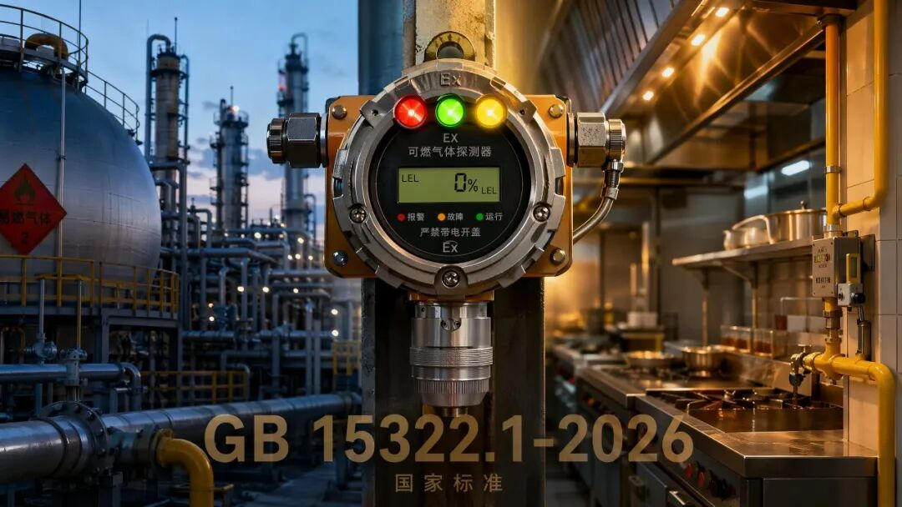
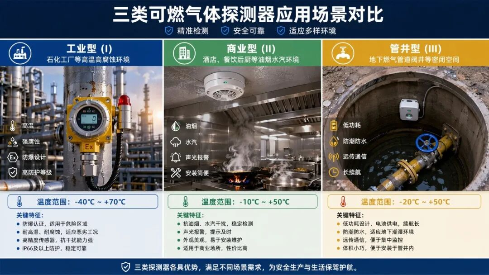
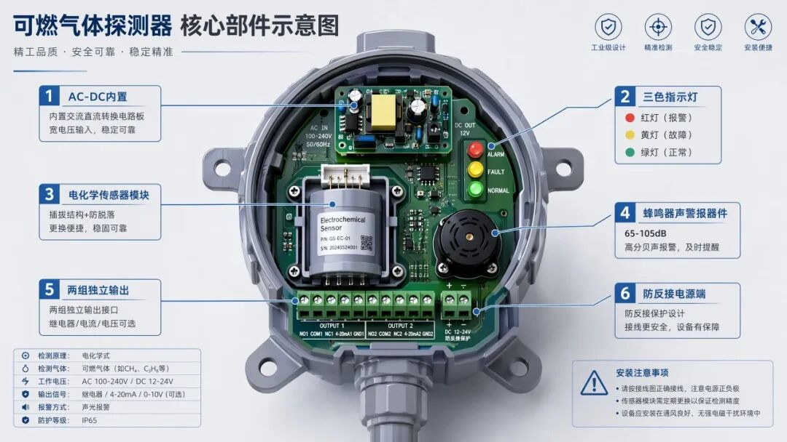
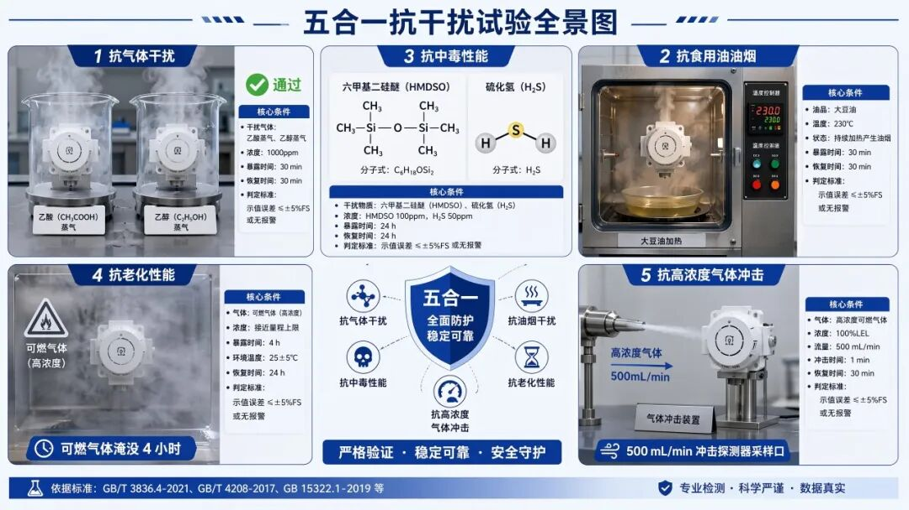
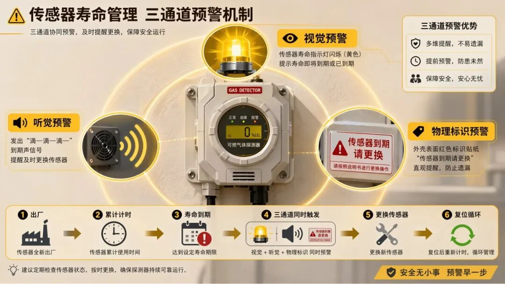
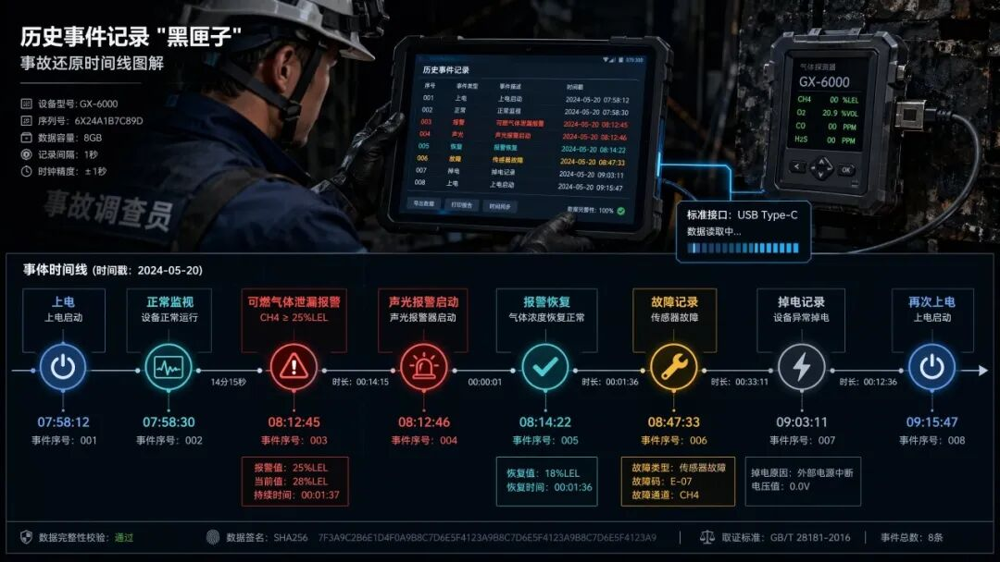
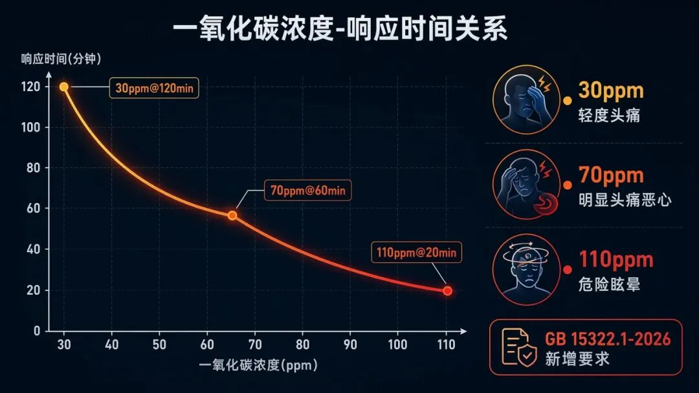
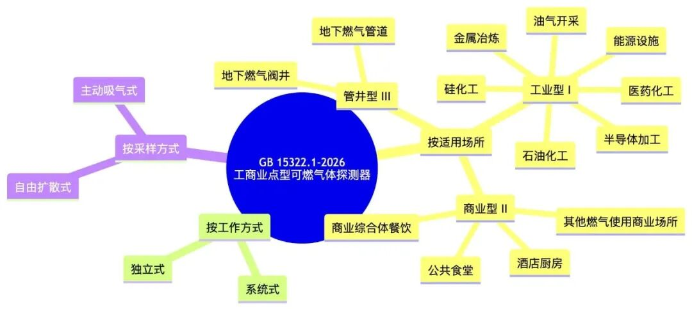
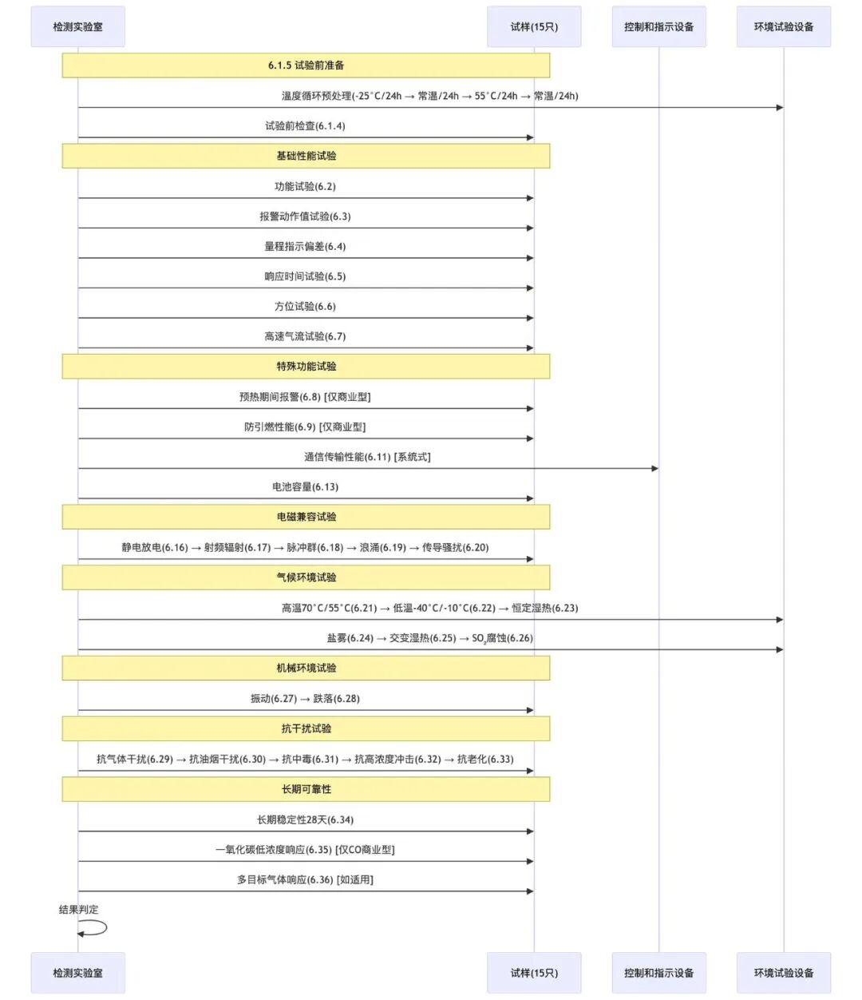
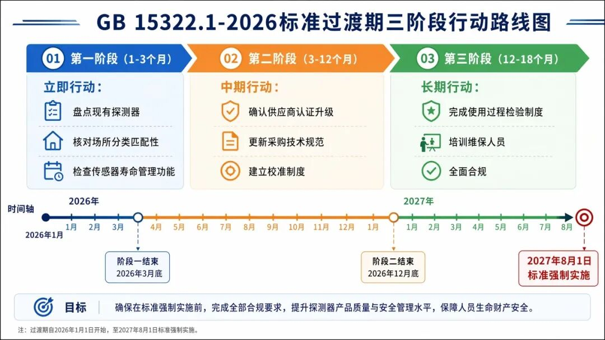

第一层 · 概述篇（3分钟快速了解）
📌 文件名称：GB 15322.1—2026《可燃气体探测器 第1部分：工业及商业用途点型可燃气体探测器》
📌 文件类型：强制性国家标准（GB），属于消防电子产品领域的核心基础标准
📌 发布机构：国家市场监督管理总局、国家标准化管理委员会联合发布；国家消防救援局提出并归口
📌 发布/实施日期：2026年1月28日发布，2027年8月1日实施（约19个月过渡期）
📌 核心关键词：可燃气体探测、工业与商业场所、点型探测器、功能安全、抗干扰性能
📌 适用范围：适用于工业与商业场所使用的点型可燃气体探测器（以下简称“探测器”）产品的设计、制造和检验。不适用于家用可燃气体探测器（由 GB 15322.2 单独规范）。
📌 立法/制定目的：为响应工业生产现场大量危险化学品作业场所和城镇商业场所日益增长的燃气安全需求，通过统一和提升探测器性能要求，有效防范可燃气体、蒸气意外泄漏引发的爆炸和火灾风险，保障人民群众生命财产安全。
📌 核心理念：“分级适用、强化功能安全、全生命周期管理”——根据应用场所风险等级将探测器分为工业型、商业型和管井型三类，分别设定差异化性能门槛；新增大量功能安全和抗干扰试验要求，将探测器从“能报警”推向“可靠报警、智能报警”；引入传感器寿命管理、历史事件记录等制度，覆盖产品从出厂到报废的全过程。
📌 版本沿革：本文件为 GB 15322.1 的第三次修订——1994年首次发布为 GB 15322—1994，2003年第一次修订拆分为 GB 15322.1—2003，2019年第二次修订，本次为第三次修订，代替 GB 15322.1—2019。

第二层 · 核心要点篇（10分钟掌握关键）
一、分类体系的重大调整（第4章）
✓ 核心变化：相比2019版，新增了按适用场所的分类维度，形成“场所类型 + 工作方式”的双维分类体系。
| 场所分类 | 适用环境 | 典型风险 | |------------|---------------------------|----------------------| | 工业型（I） |油气开采、石化、医药化工、金属冶炼、硅化工、半导体加工| 高浓度、多种类可燃气体/蒸气 | |商业型（II） | 酒店厨房、商业综合体餐饮区、公共食堂等 |天然气（甲烷）、液化石油气（丙烷）、一氧化碳| |管井型（III）| 地下燃气管道、地下燃气阀井等无人值守封闭空间 | 长期续航、远程组网通信需求 |
✓ 关键变化：删除2019版中“测量范围在100%LEL 以上的探测器”和“光纤传感式探测器”分类。

二、主要部（器）件性能要求（5.3条）——全新章节
✓ 供电要求（5.3.1）：
• 管井型必须采用48V 及以下低压供电，且需设置过流保护（保护电流 ≤ 最大工作电流的2倍）
• 220V 交流供电的探测器，交流-直流转换电路必须内置，不得使用外置电源适配器
• 48V 及以下直流供电须具备防反接保护
• 独立式探测器内置备用电池时，主备电切换不得影响正常工作，任一路电源失效须在100秒内进入故障状态
✓ 指示灯（5.3.2）：采用统一色标体系——绿色（正常/通电）、黄色（故障）、红色（报警），且须具有中文功能注释。指示灯在3米外、500lx 环境光下须清晰可见。
✓ 显示器件（5.3.3）：独立式探测器必须有显示器件，且正常监视状态下点亮后持续时长 ≥ 1分钟。
✓ 声警报器件（5.3.4）：1米处声压级须在65dB\~105dB（A 计权），环境噪声 ≤ 50dB 时适用。供电电压降至85%额定电压或电池电量低时仍须正常工作。
✓ 气体传感器（5.3.5）：
• 插拔结构须有防脱落措施，移除后30秒内进入故障状态
• 商业型探测器须具有传感器寿命状态指示（独立黄色指示灯 + 到期声信号 + 表面更换提示标识 + 说明书载明使用期限）
✓ 输出接口（5.3.6）：独立式探测器须有两组输出接口，延时功能最大不超过30秒。

三、探测报警功能（5.4条）——新增章节
✓ 必测气体种类：
• 工业型：至少能探测甲烷、丙烷、丁烷、乙炔、氢气和一氧化碳中的一种或多种
• 商业型：至少能探测甲烷、丙烷和一氧化碳中的一种或多种
• 管井型：至少能探测甲烷和丙烷中的一种
✓ 管井型特殊工作模式（5.4.5）：
• 正常状态下为定时测量模式：单次工作时长 ≥ 10秒，测量间隔 ≤ 30分钟
• 报警状态下自动切换至实时测量，确认后恢复定时测量
• 连续6个测量周期浓度低于设定值方可自动恢复（确保真实危险解除）
• 支持手动切换至实时测量模式
四、新增三大功能要求（5.5/5.6/5.12）
✓ 通信功能（5.5）：系统式探测器须支持通信地址、工作状态和测量浓度的传输与显示；无线通信须在断开后100秒内被控制和指示设备识别；管井型通信间隔 ≤ 24小时（正常状态）。
✓ 历史事件记录功能（5.6）——本版重大新增：
• 独立式探测器必须内置历史事件记录功能
• 至少记录报警、报警恢复、故障、故障恢复、掉电、上电、传感器失效、消音、自检等事件
• 每条记录须有时间戳（年/月/日/时/分），计时装置日误差 ≤ 1分钟
• 至少存储500条记录，支持通过标准接口（附录 D 通信协议）读取
✓ 预热期间报警性能（5.12）：商业型探测器在断电24小时后重新上电，须在可燃气体环境中5分钟内发出报警。
五、报警动作性能（5.7-5.11）——核心指标
✓ 报警设定值要求（5.7）：
• 低限报警：探测可燃气体的商业型探测器须位于1%LEL\~25%LEL 之间
• 一氧化碳探测器低限报警设定值须为 150×10⁻⁶（体积分数）
• 仅具有一个报警设定值的探测器须为低限报警设定值
✓ 报警动作值允差（5.11）：
• 测量范围 3%LEL\~100%LEL 的探测器：允差 ±5%LEL
• 测量范围 \< 3%LEL 的探测器：允差 ±5%量程与 80×10⁻⁶ 中的较大值
• 探测一氧化碳：允差 ±80×10⁻⁶（正常条件）/ ±120×10⁻⁶（气候环境运行后）/ ±160×10⁻⁶（耐久/中毒试验后）
六、环境耐受性试验扩容（5.21-5.22）
✓ 新增试验项目（相比2019版）：
• 盐雾试验（工业型/管井型适用）
• 交变湿热（运行）试验（商业型适用）
• 二氧化硫（SO₂）腐蚀（耐久）试验（管井型适用）
✓ 试验温度分级：
• I 类（工业型/管井型）：高温70℃，低温-40℃
• II 类（商业型）：高温55℃，低温-10℃
七、新增抗干扰试验（5.23-5.29）
| 新增试验项目 | 适用对象 | 核心要求 | |-----------|-----------|-----------------------------------| | 抗气体干扰性能 | 商业型 | 在乙酸和乙醇蒸气中各工作30分钟不误报 | |抗食用油油烟干扰性能 | 商业型 | 经受24次油烟循环（大豆油加热至230℃）不误报 | | 抗中毒性能 | 全部 | 经受六甲基二硅醚和硫化氢的混合气体干扰 | | 抗老化性能 | 全部 | 50%量程上限浓度可燃气体淹没4小时 | |一氧化碳低浓度响应性能|商业型（CO 探测器）|30ppm 时须在120分钟内响应，110ppm 时须在20分钟内响应|

八、检验规则调整（第7章）
✓ 检验类型：出厂检验、型式检验、使用过程检验（新增）
✓ 型式检验触发条件（7.2.2）：
• 新产品或转厂生产试制定型鉴定
• 设计/结构/材料/工艺变更可能影响质量
• 标准技术要求变化
• 停产1年及以上恢复生产
• 质量监管部门要求
✓ 使用过程检验（7.3）：探测器出厂后须按说明书进行定期检验和校准，校准期内报警动作值须持续满足要求。
第三层 · 详细解读篇（深度学习与应用）
第1章 · 范围
条文原文引用
本文件界定了工业及商业用途点型可燃气体探测器的术语和定义，规定了分类和命名、要求、检验规则以及标志和包装，描述了相应的试验方法。
本文件适用于工业与商业场所使用的点型可燃气体探测器（以下简称“探测器”）产品的设计、制造和检验。
白话解读
本标准的适用边界非常清晰——它只管辖“固定安装、在一个点上进行探测”的可燃气体探测器，且仅针对工业与商业用途。家用产品归 GB 15322.2 管，便携式产品归 GB 15322.3 管，线型光束产品归 GB 15322.4 管。四部分各行其道，互不交叉。
“点型”是关键词：它意味着探测器在一个特定位置取样，而非通过一条光束路径（线型）或由人携带移动（便携式）。这个技术路线的选择决定了探测器与被保护空间的关系——你需要把它安装在可燃气体可能积聚的位置。
实际应用场景
企业在采购可燃气体探测器时，首先需要确认自己的场所属于“工业”还是“商业”范畴。附录 A 给出了具体指南，但最终判据是你所在的场所风险等级：工业场所意味着高浓度、多种类的可燃气体/蒸气环境，需要更严苛的探测器。
风险防范建议：不要用家用探测器替代工商业探测器。家用产品（GB 15322.2）的检测标准完全不同，在工业环境中可能无法正常工作或提前失效。这不是“能不能用”的问题，而是直接的合规红线。
第4章 · 分类和命名
条文原文引用
探测器按适用场所分类为：a）工业型探测器（I）；b）商业型探测器（II）；c）管井型探测器（III）。
白话解读
这一章看似简短，却是本版标准结构性的核心变化。2019版仅按工作方式分类（系统式/独立式），新版叠加了“适用场所”维度，实质上是将风险等级内置到了产品分类中。三类产品的技术要求差异很大——工业型的试验温度范围（-40℃\~70℃）远超商业型（-10℃\~55℃），管井型则有独特的定时测量和长续航要求。
与其他法规标准关联性
• 上位法依据：《中华人民共和国消防法》第二十四条要求消防产品必须符合国家标准。《中华人民共和国安全生产法》第三十六条规定安全设备的设计、制造、安装、使用、检测、维修、改造和报废应当符合国家标准或者行业标准。
• 交叉引用：GB/T 3836.1（爆炸性环境设备通用要求）——工业型探测器可能同时需要满足防爆标准。
第5章 · 要求（核心章节，逐条解读）
5.2 外壳和防爆要求
工业型探测器应符合 GB/T 3836.1 的要求。
解读：这是强制性防爆要求。工业型探测器通常安装在存在爆炸性气体环境的场所（Zone 1或 Zone 2），外壳必须具备相应的防爆等级。商业型和管井型探测器如安装在非防爆区域，则不适用此条。但企业在选型时须自行评估安装区域的爆炸危险分区。
商业型探测器外壳防护等级应满足 GB/T 4208—2017 中 IP53 的要求。
解读：IP53意味着“防止有害的粉尘堆积”和“淋水防护”（防溅水，垂直方向 ±60°）。对于酒店后厨这种油烟、水汽混合的环境来说，这是最低门槛——它只保证探测器不被正常操作中的溅水损坏，并不意味着可以冲洗或浸泡。
5.3.5 气体传感器——传感器寿命管理（全新要求）
这是本版标准的重要创新点。条文要求：
商业型探测器应具有气体传感器寿命状态指示功能，并应满足以下要求：a）具有独立的气体传感器寿命状态指示灯，指示灯为黄色；b）累计工作时间达到气体传感器使用期限时，寿命状态指示灯闪亮，通过本机或配接的可燃气体报警控制器定时发出与报警声信号有明显区别的传感器寿命到期声信号；c）探测器表面有提示气体传感器寿命到期需更换的明显标识；d）在使用说明书中注明气体传感器的使用期限。
实际应用场景：在餐饮场所的后厨，一个安装了3年的探测器可能外表完好，灯也亮着，看起来“在正常工作”，但实际上电化学传感器或催化燃烧传感器的灵敏度已经严重衰减。2019版标准对此没有硬性要求，导致大量“僵尸探测器”在服役。2026版的传感器寿命管理机制——三通道预警（视觉指示灯 + 听觉信号 + 表面标识）——从根本上杜绝了这一盲区。
风险防范建议：企业应建立传感器寿命台账，在到期前主动更换，而非等到寿命指示灯亮起。一则避免在年检或事故调查中被认定为“明知到期未更换”，二则确保探测器的实际保护功能不中断。

5.6 历史事件记录功能——“黑匣子”设计
这是本版标准最重要的新增功能要求，没有之一。条文规定独立式探测器必须内置历史事件记录功能，至少存储 500 条记录，每条记录带时间戳，且时间精度要求为日误差不超过1分钟。
实际意义：这相当于给探测器装了一个“黑匣子”。在事故调查中，调查人员可以通过读取历史记录还原事件全过程——什么时间探测器上电、什么时间报警、报警持续了多久、什么时间恢复、中间是否掉过电——这些数据对于判定责任归属至关重要。
合规操作指引：企业须建立定期读取历史记录的制度和工具。附录 D 规定了标准的通信协议和数据帧格式，企业可使用符合该协议的读取装置与探测器对接。建议每季度至少读取一次，检查是否有异常的报警/故障记录。

5.12 预热期间报警性能 + 5.13 防引燃性能
这两条是商业型探测器的专用要求，共同构成了一个“最坏情况”安全验证场景。
预热期间报警：探测器断电一整天后重新上电，传感器还没“热起来”的那几分钟内，如果环境中的可燃气体浓度已经达到30%LEL，探测器能不能及时报警？标准要求在5分钟内必须发出报警信号。这模拟的是餐饮场所下班断电、第二天上班时燃气已经泄漏的场景。
防引燃性能：探测器本身是一个电气设备。如果把一个断电的探测器放进高浓度可燃气体环境再通电，它自身会不会成为引燃源？标准要求探测器在8.5%甲烷或4.6%丙烷环境中通电5分钟不发生引燃或爆炸。这是对探测器本质安全设计的极限考验。
风险防范建议：餐饮场所不应在营业结束后切断燃气探测器的电源。如果出于节能考虑必须断电，应在每日营业前至少提前10分钟恢复供电，确保探测器完成预热和自检。
5.24 抗食用油油烟干扰性能——餐饮业痛点
条文要求：使用一级大豆油加热至230℃ ± 10℃，对探测器进行24次油烟循环干扰，期间探测器不得误报，试验后报警动作值仍须满足要求。
白话解读：这条标准的实战性极强。餐饮厨房中，炒菜产生的油烟是干扰可燃气体探测器的头号“假想敌”——油脂微粒附着在传感器表面会严重影响其灵敏度，油烟中的有机蒸气也可能触发误报。标准采用的试验方案高度还原了餐饮后厨的真实使用环境：24次循环模拟的是约一个月的高强度使用，230℃接近中式爆炒的油温。
合规操作指引：餐饮企业购买商业型探测器时，应确认产品是否通过了油烟干扰试验认证。此外，定期清洁探测器外壳（但不可使用清洁剂直接喷洒传感器部位）可以延缓油烟沉积对性能的影响。
5.29 一氧化碳低浓度响应性能
这一条是2026版新增要求，仅适用于探测一氧化碳的商业型探测器。
条文规定了三个关键时间节点：
| 一氧化碳浓度 |未报警状态下须在此时限内响应|已报警后须在此时限内再次确认| |----------|--------------|--------------| |30 × 10⁻⁶ | 120分钟 | — | |70 × 10⁻⁶ | 60分钟 | 90分钟 | |110 × 10⁻⁶| 20分钟 | 40分钟 |
白话解读：一氧化碳中毒是餐饮场所的“沉默杀手”——冬季密闭厨房内燃气不完全燃烧后，一氧化碳可以在不知不觉中达到致命浓度。与可燃气体探测器追求“快速响应”（通常在30秒内）不同，一氧化碳探测器的设计逻辑是“累积响应”：低浓度下允许较长的响应时间（模拟人体长时间暴露的累积效应），但随着浓度升高，响应速度必须指数级提升。这套指标与人体对一氧化碳的毒性反应曲线高度吻合。

第6章 · 试验方法
第6章规定了15只试样的完整试验程序（表8），共计36项试验。值得重点关注的有：
6.1.5 试验前准备
所有试样在试验前须先经过温度循环预处理：-25°C（24小时）→ 常温（24小时）→ 55°C（24小时）→ 常温（24小时）。这个被称为“热冲击老化”的步骤在2019版中也有，但新版保留了这一要求，目的是在正式试验开始前剔除存在材料缺陷的样品。
6.1.2.2 报警设定值可调的探测器的双组试验设计
条文规定如报警设定值可调，试样数量翻倍至30只，分为上/下限两组分别完成全部试验。这意味着具有可调设定值的产品需要承担更高的认证成本，本质上是对“灵活性”的制衡——可调范围越大，需要验证的极端工况就越多。
第7章 · 检验规则
7.3 使用过程检验——新增概念
探测器在出厂后的长期储存和使用过程中应按使用说明书要求进行定期检验和校准。校准期内，探测器的报警动作值应满足5.11.2\~5.11.4的要求。
实际意义：这条规定将合规义务从“出厂时合格”延伸到了“全生命周期合格”。企业不能买了探测器就一劳永逸——你需要一套在用的检验校准制度。虽然标准没有规定具体的检验周期（交由制造商的说明书和企业自行确定），但“校准期内”四个字已经暗示：如果校准过期后发生事故，企业将面临“未按规定维护安全设备”的追责风险。
特殊模块
模块 A · 合规检查清单
|序号 | 检查项目 | 检查内容/标准 | 检查方法 | 责任部门/岗位 |检查结果| 备注 | |---|---------|-------------------------------------|----------------|---------|----|------------------------| | 1 |探测器场所分类匹配| 确认采购的探测器类型（工业/商业/管井）与实际应用场所一致 | 核对铭牌与附录 A 场所指南 |安全/EHS 部门| |重点关注是否存在“商用型用于工业场所”的降级使用| | 2 | 供电方式合规 |管井型：≤48V、有过流保护；220V 型：内置 AC-DC、无外置适配器| 现场查看供电接线和设备铭牌 |电气/设备管理部门| | | | 3 | 传感器寿命管理 | 商业型探测器有独立黄色寿命指示灯、表面更换提示标识、说明书载明期限 | 逐一核对三项是否齐全 |安全/EHS 部门| | 使用超过3年的探测器重点检查 | | 4 |历史事件记录功能 | 独立式探测器内置记录功能，至少500条，有标准读取接口 |使用附录 D 兼容的读取装置测试|安全/设备管理部门| | 每季度至少读取一次 | | 5 | 声光报警功能 | 指示灯颜色正确（绿/黄/红），声压级65\~105dB，有消音功能 | 现场手动触发报警测试 |安全/EHS 部门| | 在有背景噪声的环境下测试 | | 6 | 传感器防脱落 | 插拔式传感器有结构性防脱落措施，移除后30秒内报警 | 手动拔插测试 | 设备管理部门 | | 不得使用仅靠摩擦固定的插拔结构 | | 7 | 预热期间报警 | 商业型探测器断电24小时后在燃气环境中须5分钟内报警 | 查阅型式检验报告 |安全/EHS 部门| | 餐饮场所不可在营业结束后切断探测器电源 | | 8 |使用过程检验制度 | 有定期检验校准制度，校准记录在有效期内 | 查阅制度和记录 |安全/EHS 部门| | 参照制造商说明书规定的校准周期 | | 9 | 产品标志完整性 | 有中文标志（名称/型号/场所分类/标准编号/制造商/日期/技术参数） | 逐项核对产品铭牌 | 质量/验收部门 | | 进货验收时必查 | |10 |使用说明书完整性 | 含分类、技术参数、功能操作、接线端子、安装维护、使用过程检验等信息 | 核对8.3.2条清单 | 质量/验收部门 | | |
模块 B · 版本对比分析（GB 15322.1-2019 vs GB 15322.1-2026）
| 对比维度 |旧版本（GB 15322.1—2019）| 新版本（GB 15322.1—2026） | 主要变化点及影响 | |------------------|--------------------|-----------------------------------|----------------------------------------------------------| | 适用范围分类 | 仅按工作方式分类（系统式/独立式） | 增加按适用场所分类（工业/商业/管井） | 扩大分类维度。企业选型更精准，但需重新评估已有设备是否与2026版场所分类匹配 | | 光纤传感式探测器 | 包含 | 删除 | 缩小产品范围。光纤传感式探测器不再适用本部分标准，需另寻适用标准 | |100%LEL 以上探测器 | 包含 | 删除 | 缩小产品范围。大量程探测器需另行评估标准适用性 | | 外壳和防爆要求 | 未单独规定 |新增5.2条（工业型须符合 GB/T 3836.1，商业型 IP53）| 安全门槛提升。工业型的防爆要求和商业型的外壳防护均从“默认达标”变为“明文强制” | | 主要部（器）件性能 | 未系统规定 |新增5.3条（供电/指示灯/显示/声警报/传感器/输出接口/接线端子）| 设计规范细化。制造商的设计自由度缩小，但产品一致性和可靠性提升 | | 通信功能 | 未规定 | 新增5.4条 | 智能化要求。系统式探测器必须具备通信功能，推动探测器从“独立器件”走向“系统节点” | | 历史事件记录 | 无 | 新增5.6条（≥500条、带时间戳、日误差≤1分钟） |功能维度重大扩展。“黑匣子”功能为事故调查提供了全新的数据基础，独立式探测器成本将因新增存储和时钟模块而上升| | 传感器寿命管理 | 无 | 新增5.3.5.3条（三通道预警） | 全生命周期管理。商业型探测器须强制指示传感器到期，解决了“僵尸探测器”问题 | | 报警重复性 | 有（4.3.6） | 删除 | 简化要求。但不代表不重视精度——报警动作值允差的要求仍然覆盖 | | 探测器互换性能 | 有（4.3.10） | 删除 | 简化要求。降低产品间的互换性约束，给制造商更大设计空间 | |盐雾/交变湿热/二氧化硫试验| 无 | 新增（5.21） | 环境耐受性大幅提升。管井型须通过二氧化硫腐蚀试验——这对地下管网环境的适用性提出了新门槛 | | 抗食用油油烟干扰 | 无 | 新增（5.24） | 餐饮行业专用要求。将直接影响商业型探测器的传感器选型和外壳设计 | | 抗老化性能 | 无 | 新增（5.27） | 耐久性要求。50%量程上限浓度可燃气体淹没4小时，考验长期暴露耐受能力 | | 一氧化碳低浓度响应 | 无 | 新增（5.29） | CO 探测精度提升。明确30/70/110ppm 三档响应时间，填补了旧版空白 | | 预热期间报警 | 无 | 新增（5.12） | 极端工况保障。断电后上电的冷启动阶段也必须具备报警能力 | | 检验规则 | 出厂检验+型式检验 | 出厂检验+型式检验+使用过程检验 | 全生命周期合规。检验责任从出厂延伸至使用全过程 | | 产品型号编制规则 | 旧版附录 A | 新版附录 B（含产品类别代码 G/J/B/X） | 编码体系统一。便于跨产品线统一管理 | | 外壳燃烧性能试验 | 无 | 新增附录 C | 非金属外壳阻燃要求。商业型探测器如采用塑料外壳必须通过燃烧试验 | | 历史事件读取装置 | 无 | 新增附录 D（完整通信协议） | 标准化接口。统一的读取协议允许第三方工具接入，降低用户读取门槛 | | 抗食用油油烟试验设备 | 无 | 新增附录 E | 标准化试验条件。统一了各检测实验室的油烟试验方法 | | 过渡期 | — | 约19个月（2026.1\~2027.8） | 企业在2027年8月1日前须完成产品升级和新认证 |
模块 C · 岗位责任矩阵
| 岗位/职务 | 法定/制度职责 | 核心任务举例 | 考核指标 | 违规后果 | |----------------|------------------------------------|-----------------------------------|--------------------|---------------------------------------| | 企业主要负责人 |《安全生产法》第二十一条：建立健全并落实全员安全生产责任制，保证安全投入| 审批可燃气体探测器采购预算和定期检验校准费用；指定分管负责人 |探测器有效运行率；年度安全投入占营收比例|行政：罚款（安全生产法第九十三条）；刑事：重大责任事故罪（刑法第一百三十四条）| |安全/EHS 分管负责人| 组织制定安全设备管理制度；监督检查探测器选型、安装和定期校准 | 建立探测器台账和校准计划；确保场所分类与探测器类型匹配 | 探测器合规率；隐患整改率 | 行政：罚款、降职；刑事：重大劳动安全事故罪 | | 设备管理部门负责人 | 确保探测器安装符合标准；组织历史记录读取和数据分析 | 每季度读取历史记录并归档；传感器寿命到期前安排更换；维护校准记录 | 校准完成率；传感器过期率；设备完好率 | 行政：纪律处分；经济：绩效考核扣减 | | 一线操作/维保人员 | 按操作手册进行日常巡检、清洁、功能测试 |每日外观检查（指示灯状态、外壳完整性）；每月手动触发功能测试；清洁外壳| 巡检记录完成率；漏检次数 | 纪律：警告/记过；经济：绩效扣减 | | 采购/验收人员 | 采购时核验产品证书和型式检验报告；进货验收核对标志和说明书完整性 |核对8.1和8.3条标志/包装要求；查验 GB 15322.1认证证书| 进货合格率；验收记录完整性 | 纪律/经济责任；企业连带采购不合格产品的法律责任 |
模块 D · 常见问题 Q&A
Q1：企业现有的2019版探测器是否需要在2027年8月1日后立即更换？
A1：标准本身不强制要求已安装产品“追溯合规”。GB 15322.1-2026的过渡期安排是针对新出厂产品的。但需要考虑两个因素：一是《安全生产法》要求安全设备“符合国家标准”，若监管部门在检查中以2026版标准为依据判定现有设备不符合安全要求，企业可能面临整改令；二是产品校准和使用过程检验（7.3条）要求探测器在校准期内报警动作值持续满足标准——旧设备很可能无法达到2026版的更严格允差。建议：高风险场所（油气、化工等）优先在过渡期内完成升级替换；商业场所可结合传感器寿命到期和设备自然更替节奏逐步替换。
Q2：管井型探测器为何要求48V 及以下低压供电？
A2：地下燃气管道和阀井属于潮湿、密闭、可能积聚可燃气体的环境。高电压（如220V）在这种环境下存在电弧引燃风险。48V 及以下的低压供电属于“安全特低电压”范畴，即使发生短路，产生的能量也不足以引燃大多数可燃气体。配合过流保护器件（保护电流不超过最大工作电流的2倍），管井型探测器从电源设计层面就降低了自身成为引燃源的风险。
Q3：历史事件记录为什么要达到500条？
A3：按附录 D 通信协议的设计，历史记录编号从01H 到 FFH 共255条为一轮，500条意味着至少覆盖近两轮完整记录。以餐饮场所为例，假设每天触发一次低限报警（如烹饪时的瞬时燃气峰值）和一次报警恢复，每天产生2条记录，500条可覆盖约250天，近8个月的使用周期。这个容量足以让企业在定期读取（建议每季度一次）时获取完整的、未被覆盖的历史数据。如果容量太小（如仅50条），正常操作产生的记录会快速覆盖早期数据，在需要调查时丢失关键信息。
Q4：一氧化碳探测器的响应时间为何比可燃气体探测器慢那么多？
A4：这是一个重要的设计理念差异。可燃气体探测器追求“秒级响应”（标准要求一般不超过30秒），因为可燃气体的危险在于“爆炸”——浓度达到爆炸下限后的每一秒都可能是导火索。一氧化碳的危险在于“中毒”——它的毒性取决于“浓度 × 时间”的累积效应。医学上，100ppm 一氧化碳暴露2-3小时才会出现轻度头痛，而800ppm 暴露45分钟就可能致死。因此，CO 探测器的响应时间设计为“浓度越高越快”，与人体中毒曲线匹配——而不是追求“越快越好”。110ppm 时20分钟内的响应已经足够在中毒症状出现前提供有效预警。
Q5：商业型探测器如果安装在半户外的商业综合体走廊（有顶但通风），IP53够不够？
A5：IP53的“3”代表防淋水（垂直方向±60°的溅水），不防任何方向的水流喷射（需要 IPx5），更不防强力喷水（IPx6）。半户外环境如果只是有顶盖、不会直接淋雨，IP53理论上是够的。但需评估：该走廊是否有清洗地面时可能溅到探测器的情况？是否有空调冷凝水滴落？是否有风吹雨水飘入？如果有其中任一情况，建议选择 IP54或更高防护等级的产品，或为探测器加装防护罩。
Q6：使用过程检验（7.3条）的周期如何确定？
A6：标准未规定统一周期，而是要求“按使用说明书要求”。这意味着制造商须在产品说明书中明确校准周期。对于企业而言，这是一个需要“合理性”论证的问题：说明书写12个月但你的环境特别恶劣（高粉尘、高湿度、高腐蚀性气体），你应当缩短周期。建议参照同类设备行业惯例：一般商业场所12个月，工业场所6个月，有腐蚀性环境的特殊场所3个月。关键在于——你能否提供合理的周期依据和完整的校准记录。
模块 E · 可视化图解
1. 探测器分类体系（思维导图）

2. 探测器报警与恢复状态流转（流程图）
graph TD A[正常监视状态] --> B{可燃气体浓度<br>达到报警设定值?} B -->|是| C[报警状态] B -->|否| A C --> D[发出声光报警信号] C --> E[输出接口启动] C --> F[通信上传报警信息] C --> G{探测器种类?} G -->|管井型| H[切换至实时测量模式<br>测量间隔≤5min] G -->|工业/商业型| I[持续实时监测] H --> J{连续6个周期<br>浓度<报警设定值?} J -->|是| K[自动或手动复位] J -->|否| H I --> L{浓度降至<br>报警设定值以下?} L -->|是,30s内| K L -->|否| I K --> M[恢复正常监视状态] M --> A E --> N[手动消音/远程复位] C --> N
3. 型式试验完整流程（序列图）

4. 商业型探测器传感器寿命管理闭环（流程图）
graph TD A[探测器出厂] --> B[传感器累计计时开始] B --> C{累计时间<br>达到使用期限?} C -->|否| D[正常工作] C -->|是| E[黄色寿命指示灯闪亮] E --> F[定时发出传感器寿命到期声信号] E --> G[表面标识提示更换] F --> H[用户查阅说明书] G --> H H --> I[安排传感器更换] I --> J[更换传感器/传感器组件] J --> K[复位寿命计时器] K --> B D --> L[定期功能测试] L --> M{报警动作值<br>在允差范围内?} M -->|是| D M -->|否| I
总结与建议
GB 15322.1-2026 是一次“从可用到可靠”的跨越式修订。它不只是技术指标的微调——2019版的修订已做了那一步——而是从设计理念层面将探测器从一个“单独的报警器件”重新定义为“系统化的安全节点”。三个维度的变化尤其值得关注：
第一，场所分类的引入让产品选型有了法律意义上的“对错”之分。 过去企业可以用一个工业级探测器覆盖所有场景（虽然成本高但合规），也可以用商业型“凑合”用于工业环境（灰色地带）。2026版通过附录 A 的场所指南和第4章的分类体系，实质上为每个场所锁定了对应的探测器等级。
第二，功能安全要求的大幅扩容——历史记录、传感器寿命管理、通信协议——标志着探测器进入“全生命周期可追溯”时代。 这对事故调查、责任判定的影响将是深远的：过去“探测器装没装”是关注的焦点，未来“探测器记录了没有、记录了什么”将成为新的合规标准。
第三，抗干扰试验的全方位覆盖（油烟、气体、中毒、老化）直面了中国工商业环境中最真实的痛点。 中餐厨房的油烟、化工厂的腐蚀性气氛、地下管井的高湿硫化环境——这些曾经被忽视的工况条件，现在都有了标准化测试方法来验证探测器的适应性。
对企业而言，过渡期的19个月（2026年1月至2027年7月）不算充裕。建议行动优先级：
-
立即行动（1-3个月内）：盘点现有探测器型号和安装场所，对照附录 A 确认场所分类匹配性；检查商业型探测器是否具备传感器寿命管理功能。
-
中期行动（3-12个月内）：与供应商确认在售产品是否已通过2026版认证或计划升级；将2026版要求纳入新的采购技术规范。
• 长期行动（12-18个月内）：完成在用探测器的使用过程检验制度建立；培训维保人员掌握历史记录读取和传感器寿命管理操作。

免责声明：本解读文档基于 GB 15322.1—2026 标准文本提供技术性分析和合规建议，仅供企业参考。具体的合规判定、法律责任认定和执法依据应以主管部门的官方解释和现行法律法规为准。文中引用的其他法律法规条文均为理解性关联，不作为正式法律意见。